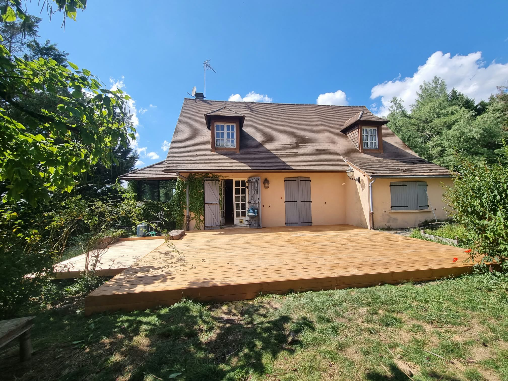
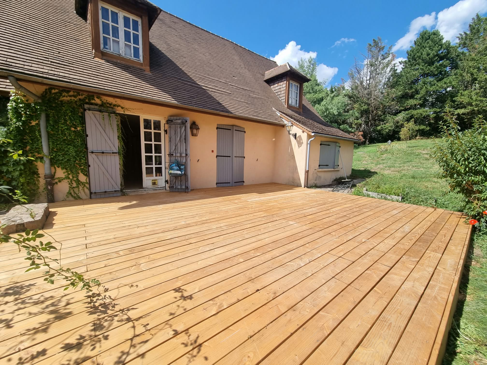

My first independent project for a client.
A main terrace area of more than 50 m²; a stepped, multi-level section on the right-hand side to provide access to the garden; decking boards running parallel to the wall.
The existing paved surface meant that the terrace had to be built on adjustable pedestals.
The project went smoothly, despite the basic tools I had available at the time.
A beautiful project, completed under a lovely sunny sky!

